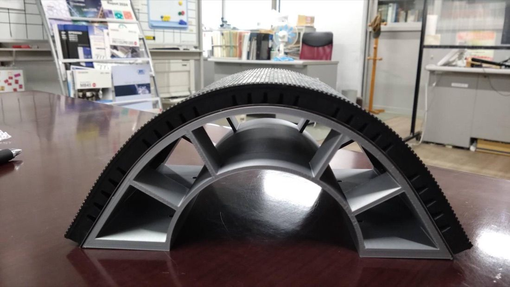

Smart pole
The Smart Pole Interaction Unit.
The pole I built my PhD around. Scroll to take it apart, then see how it was made.
Teardown
Taking the pole apart.
The Smart Pole Interaction Unit is what my PhD is built around. It stands at the curb, watches the crossing, and tells people on foot when it is their turn, so each car does not have to.
scroll to take it apart
Parts as described in my AutoUI ’24 and CHI ’26 papers.
Built
How the pole was built.
The ring display went from CAD to a printed frame to a workshop drawing before it ever said WALK on a street.
-
1 · modelled

the ring frame in CAD. radial ribs carry the curve. -
2 · printed

printed, with the flexible LED panel wrapped over the ribs. -
3 · drawn up

configuration 4: 1650 mm tall, ring 606 × 393 mm, about 32 kg. -
4 · assembled
hover to turn it. the whole pole in Fusion 360.
Technical drawing by me (2025).